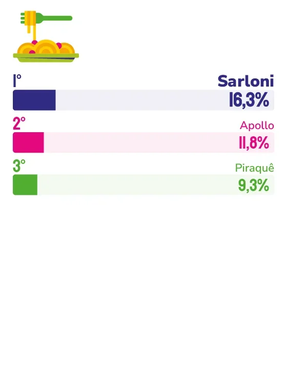

MACARRÃO
SARLONI
Marca aposta na proximidade regional e no equilíbrio entre tradição e inovação para se manter como a mais lembrada na categoria Macarrão.
Quando o consumidor capixaba é perguntado, sem qualquer estímulo, qual marca de macarrão vem à cabeça, a resposta mais frequente costuma ser Sarloni, marca da Viloni Alimentos. Para a diretora de marketing da empresa, Ana Paula Villaschi Martins, esse tipo de lembrança não nasce de uma campanha pontual, mas de uma relação construída ao longo de anos. “Esse reconhecimento reflete a confiança construída ao longo de décadas de relacionamento com os consumidores capixabas, que fazem parte da nossa história e do nosso crescimento”, afirma.
Segundo a diretora, a marca que vem à mente das pessoas costuma estar associada a experiências vividas ao longo da vida. “No caso da Sarloni, acreditamos que vêm à mente lembranças de momentos em família, tradição, praticidade, qualidade e a certeza de encontrar um produto que já faz parte do seu dia a dia”, explica. Mais do que visibilidade, ela descreve esse resultado como prova de pertencimento. “Ser a primeira marca lembrada é um reconhecimento é a demonstração de que a Sarloni conquistou um lugar especial na história e na confiança dos capixabas.”
Esse vínculo, segundo Ana Paula, não tem um único marco de virada, mas uma sequência de decisões mantidas ao longo do tempo. “A principal delas foi manter o compromisso com a qualidade e com a essência da marca, mesmo diante das transformações do mercado e dos hábitos de consumo”, diz.
A identidade regional aparece como peça central dessa estratégia. “Somos uma marca genuinamente capixaba, que conhece os costumes, os gostos e a cultura local. Essa conexão autêntica nos permite construir relações verdadeiras e duradouras, algo que vai muito além do produto e se transforma em identificação e pertencimento.”
Ao analisar o comportamento do consumidor capixaba hoje, a diretora identifica um público mais atento à qualidade, à praticidade e à transparência das marcas, mas sem deixar de valorizar empresas com história e proximidade com a comunidade local. “Os consumidores querem se relacionar com empresas que tenham história, credibilidade e compromisso com a região onde atuam”, observa.
Esse equilíbrio entre tradição e atualização também aparece nas apostas recentes da Viloni Alimentos. Lançamentos como a Rosquinha de Coco e novas linhas de cookies, segundo Ana Paula, nascem da capacidade de identificar tendências, compreender os desejos dos consumidores e transformar essas percepções em novidades que agregam valor ao portfólio sem abrir mão dos pilares de qualidade, sabor e confiança que sustentam a marca.

Ana Paula Villaschi Martins
Diretora de marketing da Viloni Alimentos
“Acreditamos que o segredo para continuar sendo uma marca ícone está justamente nesse equilíbrio entre evolução e tradição. Mudar o que for necessário para permanecer relevante, mas preservar aquilo que faz as pessoas reconhecerem, confiarem e se identificarem com a Sarloni. É essa combinação que nos trouxe até aqui e que continuará guiando nosso futuro.”
55
